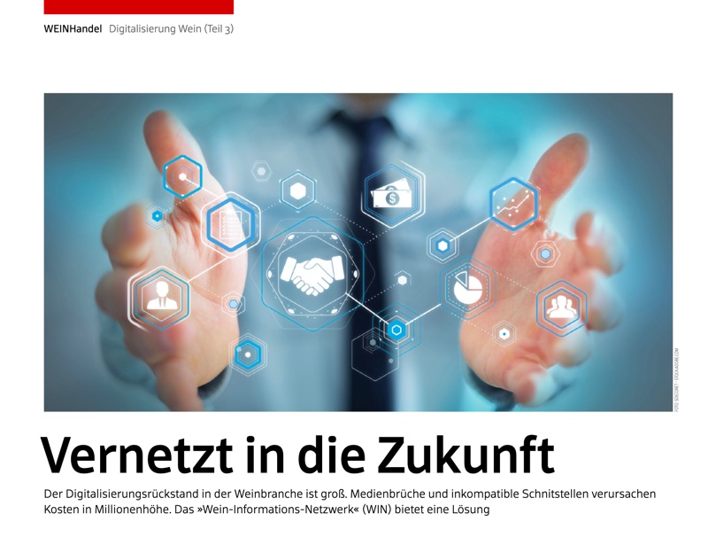
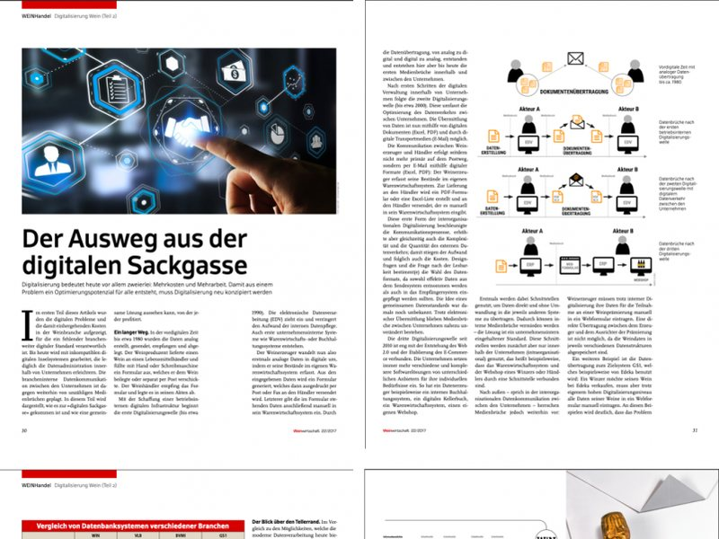
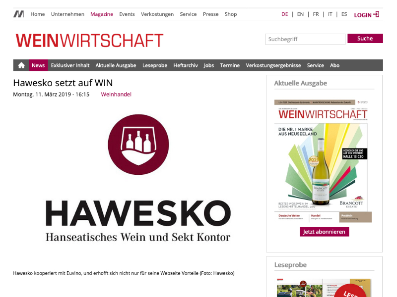
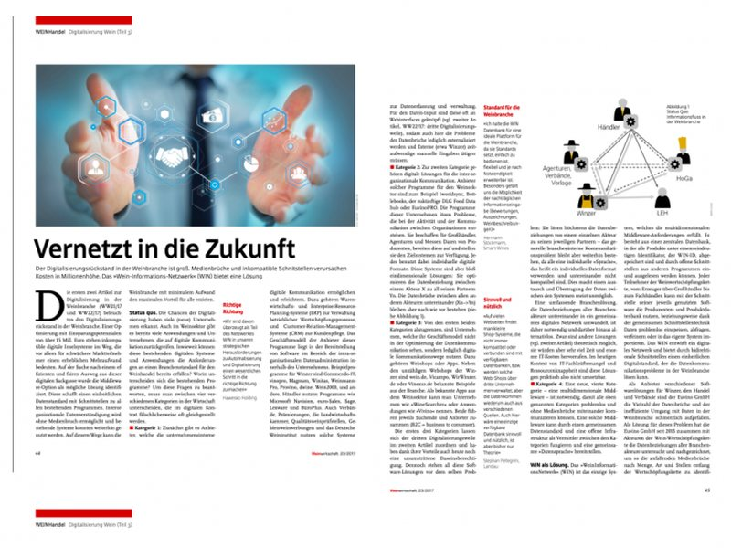
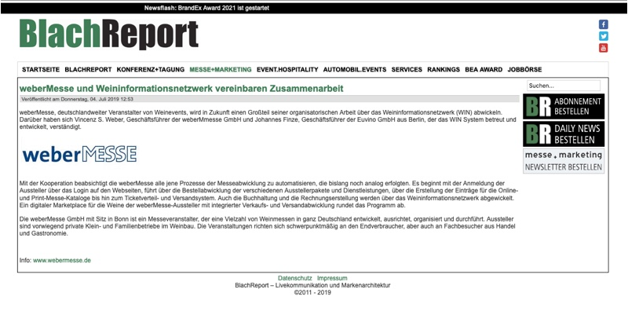
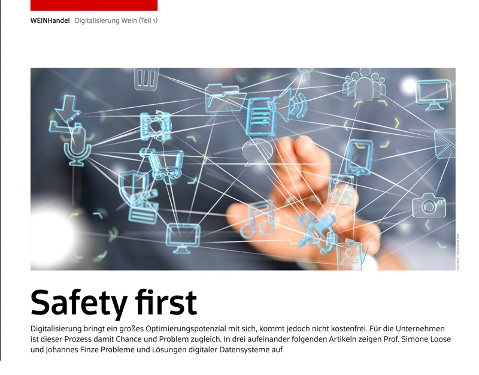
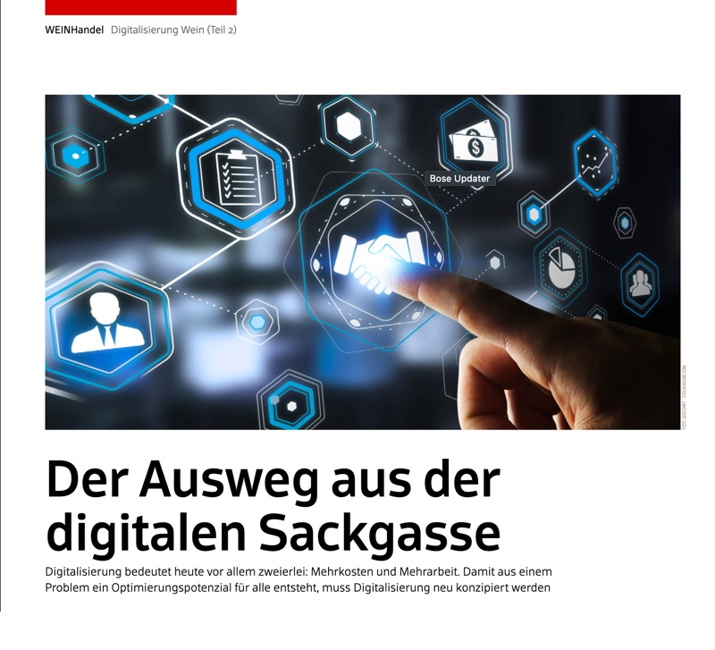
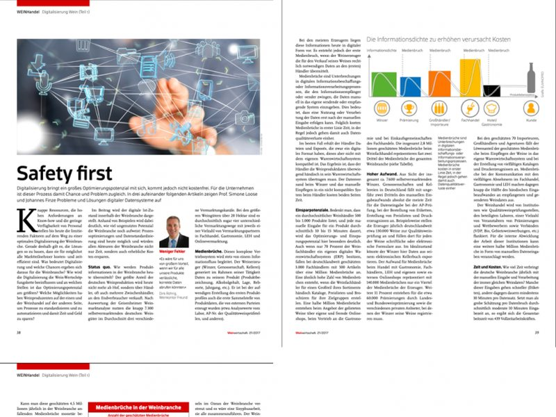

What the Trade Writes About WIN.
Articles, partnerships and launches since 2017. Scroll through the coverage and open any piece to read the original.

WeinWirtschaft · 2017Networked into the future Bayard Consulting Partnership EuvinoPRO goes live on GDSN via b-synced Bayard Consulting · Mar 2020EuvinoPRO goes live on GDSN via b-synced
WeinWirtschaft · 2017The digital dead end: the full article
WeinWirtschaft · Mar 2019Hawesko bets on WIN
WeinWirtschaft · 2017Networked into the future: the full article
BlachReport · Jul 2019weberMesse and WIN agree to work together atrify × Euvino Launch f-label: QR code instead of label atrify × Euvino · Mar 2023f-label: QR code instead of label
WeinWirtschaft · 2017Safety first
WeinWirtschaft · 2017The way out of the digital dead end atrify Partnership A direct line to REWE and Edeka atrify · Nov 2020A direct line to REWE and Edeka
WeinWirtschaft · 2017Safety first: the full article Meininger Interview EuvinoPRO streamlines the beverage industry Meininger · InterviewEuvinoPRO streamlines the beverage industry